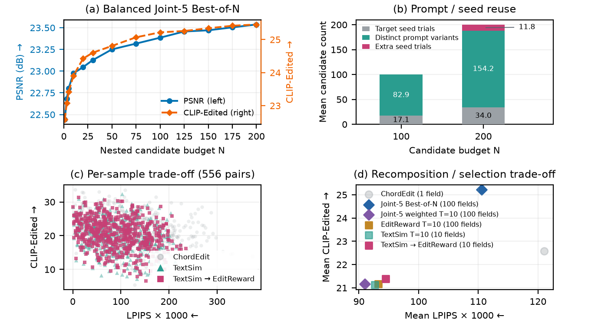

A research project in image editing
SearchChord
Prompt Preselection and Field Recomposition
for One-Step Image Editing
Search over prompts. Combine control fields.
Preserve the scene while making the requested edit.
The idea
Abstract
One-step image editors enable search over alternative prompts and random seeds, but using these candidates effectively requires balancing edit fidelity, source preservation, and computation. We present SearchChord, a training-free framework that combines text-based preselection, optional image verification, and latent-field recomposition. TextSim preselects ten of 100 candidates using text similarity, computes their control fields, and optionally reweights them using image-verifier scores. Experiments on PIE-Bench and CropWeed-EditBench reveal a consistent preservation–semantic trade-off: recomposition improves preservation of unchanged content, while candidate selection can achieve stronger target-text alignment. On PIE-Bench, diagnostic oracle recomposition reaches 24.73 dB PSNR, whereas oracle selection from 200 candidates reaches 25.46 CLIP-Edited. Practical verification partially recovers semantic alignment but does not eliminate the loss associated with recomposition, including on agricultural edits. These findings motivate text-first preselection and stronger verification to balance preservation, edit fidelity, and computational cost.
How it works
Search before generating.
Combine before the final edit.
We build on ChordEdit, keeping its base editor and refinement fixed. TextSim ranks prompt variants before candidate image generation.
- 01
Build the candidate pool
Pair prompt variants with distinct noise seeds. Most experiments use 100 candidates.
N = 100 - 02
Preselect with TextSim
Rank target and edit-direction alignment. Compute only the ten retained fields.
100 texts → 10 fields - 03
Verify when needed
Generate retained candidate images. EditReward or EditScore supplies image-based weights.
Optional image verification - 04
Recompose the fields
Aggregate complete latent updates, then apply common refinement with the original target.
One final edit
Text similarity cannot verify visual correctness. Our experiments compare candidate selection and field recomposition while measuring preservation and edit fidelity separately.
A closer look
Selected improvements
over ChordEdit
12 PIE-Bench edits and 12 CropWeed edits, shown alongside the source and both SearchChord variants. Click any image to inspect its original resolution.
Loading saved comparisons…
ChordEdit TextSim TextSim → EditRewardPSNR and LPIPS evaluate the unedited region; CLIP-Edited measures target-text alignment. Higher PSNR/CLIP-Edited and lower LPIPS are better. CropWeed images retain their original benchmark padding. Relative leaf edits do not establish exact leaf-count accuracy.
The full picture
Preservation and edit fidelity
remain a trade-off
Means over identical benchmark IDs. Selected gallery gains do not imply that a method leads every metric across the full dataset.
PIE-Bench
700 semantic evaluations; 556 preservation-valid edits. N = 100, T = 10 for recomposition; ChordEdit uses one field.
| Method | PSNR ↑ | MSE × 10³ ↓ | LPIPS × 10³ ↓ | CLIP-Whole ↑ | CLIP-Edited ↑ |
|---|
CropWeed-EditBench
10,160 shared edits across 3,387 plants: 3,387 weather, 3,387 soil, and 3,386 relative leaf-amount edits.
| Edit family | Method | PSNR ↑ | MSE × 10³ ↓ | LPIPS × 10³ ↓ | CLIP-Whole ↑ | CLIP-Edited ↑ |
|---|
Bold marks the best displayed mean within each comparison group. These descriptive means do not establish statistical significance or independently judged edit correctness.
Candidate budgets
Exploring 1 to 200 candidates
Larger candidate pools offer diagnostic semantic headroom. We use N = 100 for controlled comparisons and a pragmatic balance between diversity and computation.
Prompt variants and noise seeds vary together. The curves therefore do not isolate the contribution of prompt diversity from seed diversity. N = 200 evaluates selection from the extended pool; it does not combine all 200 fields.
Inspect the figure at full resolution ↗

Read and reproduce
Resources
Citation
@misc{searchchord2026,
title = {SearchChord: Prompt Preselection and Field
Recomposition for One-Step Image Editing},
year = {2026},
note = {Research manuscript}
}
SearchChord builds on ChordEdit. Evaluation uses PIE-Bench and CropWeed-EditBench. Images shown here are saved experimental outputs; no additional examples were generated for this website.